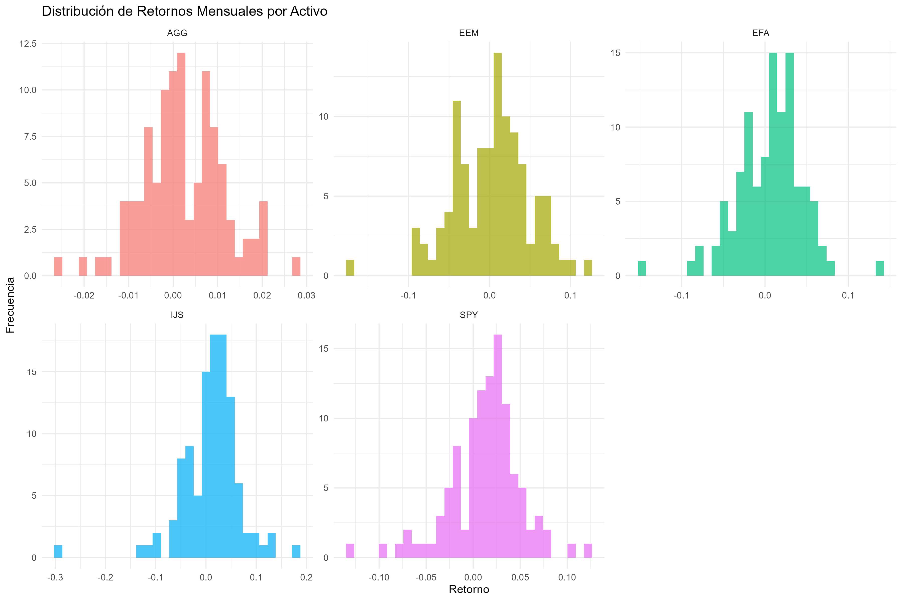
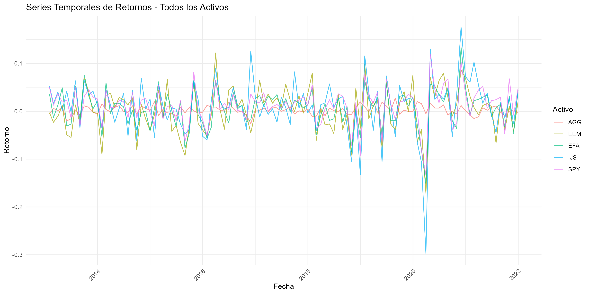
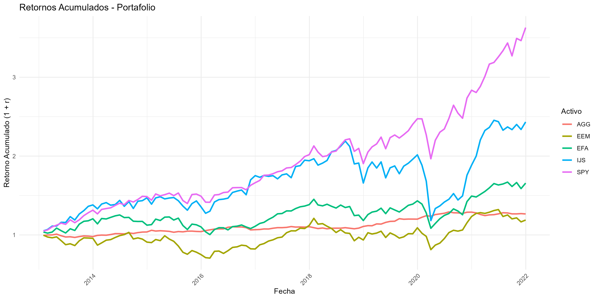
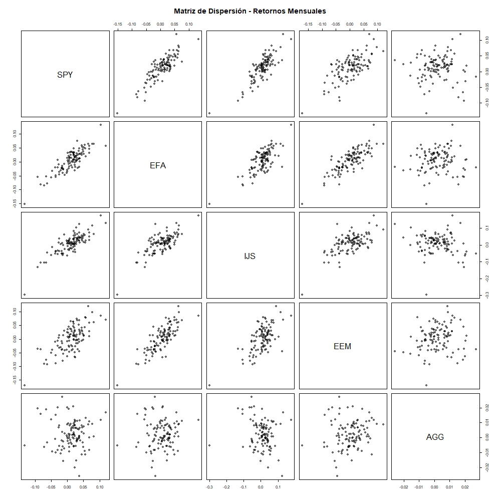
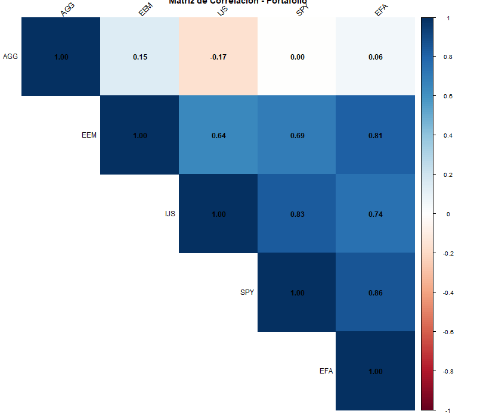
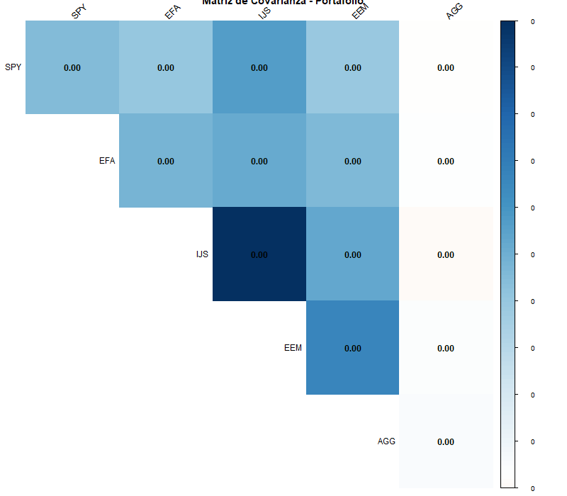

Portafolio de 5 Activos Financieros
| Activo | Media (%) | Desv. Estándar (%) | Mínimo (%) | Q1 (%) | Mediana (%) | Q3 (%) | Máximo (%) | Obs. Faltantes |
|---|---|---|---|---|---|---|---|---|
| SPY | 1.27 | 3.85 | -13.34 | -0.13 | 1.82 | 3.56 | 11.95 | 0 |
| EFA | 0.55 | 3.94 | -15.21 | -1.97 | 0.94 | 3.12 | 13.34 | 0 |
| IJS | 1.00 | 5.81 | -29.79 | -1.95 | 1.35 | 4.06 | 17.57 | 0 |
| EEM | 0.27 | 4.70 | -17.16 | -2.89 | 0.83 | 3.15 | 12.19 | 0 |
| AGG | 0.22 | 0.92 | -2.60 | -0.33 | 0.16 | 0.83 | 2.75 | 0 |

Los histogramas muestran la distribución de frecuencias de los retornos mensuales. Se observan distribuciones aproximadamente normales con algunas colas largas, particularmente en IJS y EEM.


Las series temporales revelan sincronización entre activos, especialmente durante períodos de volatilidad de mercado. AGG (bonos) muestra comportamiento diferenciado.

Gráfico que muestra cómo $1 invertido al inicio ha evolucionado hasta diciembre 2021. SPY y IJS muestran mejor desempeño acumulado.

La matriz de dispersión permite visualizar las relaciones bivariadas entre todos los pares de activos, confirmando las correlaciones observadas.

El mapa de calor ordena los activos por similitud mediante clustering jerárquico, facilitando la identificación de grupos correlacionados.
| Activo | SPY | EFA | IJS | EEM | AGG |
|---|---|---|---|---|---|
| SPY | 0.001479 | 0.001300 | 0.001855 | 0.001249 | 0.000000 |
| EFA | 0.001300 | 0.001555 | 0.001700 | 0.001500 | 0.000000 |
| IJS | 0.001855 | 0.001700 | 0.003370 | 0.001750 | -0.000089 |
| EEM | 0.001249 | 0.001500 | 0.001750 | 0.002205 | 0.000064 |
| AGG | 0.000000 | 0.000000 | -0.000089 | 0.000064 | 0.000084 |
La covarianza mide cómo varían conjuntamente dos activos. Valores altos indican movimientos sincronizados.

Visualiza la magnitud de la covarianza entre pares de activos. IJS muestra covarianzas más altas debido a su mayor volatilidad.
Fondo indexado que replica el índice S&P 500 (500 grandes empresas estadounidenses). Principal referente del mercado accionario US.
Índice de mercados desarrollados fuera de USA (Europa, Japón, Australia). Diversificación geográfica.
Empresas pequeñas estadounidenses. Mayor volatilidad pero potencial de retornos más altos.
Mercados emergentes (China, India, Brasil). Mayor riesgo pero oportunidades de crecimiento.
Bonos de inversión de USA. Activo defensivo con baja correlación a acciones.